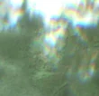
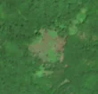

7,4 ha de pădure schimbată lângă Târnova
Între vara lui 2025 și 27 aprilie 2026, pe aproximativ 7,4 ha de pădure din comuna Brebu, lângă Târnova, județul Caraș-Severin, imaginile Sentinel-2 arată că vegetația a dispărut sau s-a schimbat puternic. E o schimbare care merită verificată.
Autorizația de tăiere
pășune, nu pădure
Analistul nu vede pădure tăiată: înainte era pășune, fâneață sau teren cu copaci răzleți și tufăriș, nu pădure închisă. Dacă s-au scos copaci de pe pășune, și asta cere autorizație de la ocolul silvic (Codul silvic, art. 60), dar aceste autorizații nu apar sigur în registrul public, așa că nu putem spune dacă există. Nu e dovadă de ilegalitate.
Ce se vede în poze: În poza detaliată zona marcată era o poiană cu iarbă și câțiva copaci răzleți, nu pădure deasă. În poza «după» poiana pare mai brună, ca și cum iarba ar fi fost curățată sau uscată, iar pădurea din jur a rămas verde.


Înainte și după: Copernicus Sentinel-2, 10 m pe pixel, conturul zonei cu portocaliu. Poza detaliată (Esri World Imagery) e de acum 1–4 ani: arată ce era acolo înainte, nu tăierea.
Pe scurt
- Identificator
- 20260427_45345_22055
- Locul
- Târnova, comuna Brebu, județul Caraș-Severin (SIRUTA 51626)
- Coordonate (centru)
- 45.34479, 22.05472 · Google Maps · OpenStreetMap
- Suprafața
- 7,4 ha (din pixeli de 10 m; ± câțiva pixeli pe margine)
- Pădurea întreagă
- în vara lui 2025 (de atunci, nori sau iarnă)
- Prima imagine cu schimbarea
- 27 aprilie 2026
- Imagini în care se vede schimbarea
- 6
- Cât de sigur e semnalul din satelit
- scăzută
- Autorizația cea mai apropiată
- APV 2400141400670 · Ocolul Silvic Resita, valabilă 17 septembrie 2024 – 31 octombrie 2024, la 387 m de zonă
- Terenul
- pădure privată, după amenajamentul silvic publicat
- Garda Forestieră
- Timișoara
Dacă vrei să verifici sau să sesizezi
- Pădurile din județul Caraș-Severin sunt în grija Gărzii Forestiere Timișoara, care controlează tăierile și dă amenzile.
- Autorizația găsită în zonă e emisă de Ocolul Silvic Resita.
- Formularul Gărzii Forestiere Naționale primește sesizări și fără nume. Trimite linkul acestei pagini, coordonatele și pozele. Dacă tăierea e în desfășurare, sună la 112.
- Autorizațiile și transporturile de lemn se pot căuta în Inspectorul Pădurii.
Pagina arată ce se vede din satelit și ce scrie în registrul public; nu e o dovadă în sine.
Cum citezi zona
Linkul acestei pagini nu se schimbă. Dacă zona iese vreodată de pe hartă, pagina rămâne, cu data și cu ce știam despre ea.
Pădurea RO, zona 20260427_45345_22055: 7,4 ha, Târnova, comuna Brebu, județul Caraș-Severin; schimbare văzută din satelit între vara lui 2025 și 27 aprilie 2026. https://iliemihai.github.io/padurea-ro/zona/20260427_45345_22055/ (consultat la [data]). Date: CC BY 4.0.
Datele zonei: GeoJSON · toate zonele: date deschise · licența CC BY 4.0.
Istoricul zonei pe hartă
Starea se poate schimba când registrul publică o autorizație sau când analistul vede poze mai bune. O ținem aici, ca un link citat să arate și ce spuneam atunci.
Pe hartă cel târziu din 5 noiembrie 2026.
- 5 noiembrie 2026 – azi · pășune, nu pădure
Detalii tehnice, pentru verificare
De ce acest nivel de încredere:
- văzută schimbată în 6 imagini diferite
- peste 3 ha
- ultima dată am văzut-o intactă în vara lui 2025 (de atunci, nori sau zăpadă)
- fără părerea AI
Ce a văzut analistul cu context: Poza detaliată din 2024 arată un luminiș ierbos cu un petic de sol descoperit și copaci izolați, în concordanță cu coronamentul de 38% din 2000 și cu 5% pășune. În imaginea Sentinel-2 din 2026 schimbarea rămâne în limita luminișului, fără margini drepte, fără drumuri de acces și fără continuare în pădurea din jur; imaginea «înainte» din 2025 este inutilizabilă (ceață, artefacte), iar autorizația APV este la 387 m, fără suprapunere.
- Placa Sentinel-2
- 34TER
- NDVI de referință
- 0.85
- NBR de referință
- 0.62
- Scăderea în pădurea din jur
- 0.09
- Persistență
- 0.96
- NDVI / NBR după
- 0.448 / 0.115
- Analistul cu context (model)
- pasune · 0.55
Cum se calculează fiecare: metodologia.
Pune harta zonei într-un articol
Copiază codul în articol (merge în majoritatea site-urilor de știri). Sau pune doar linkul: WhatsApp, Facebook și X arată singure poza zonei.